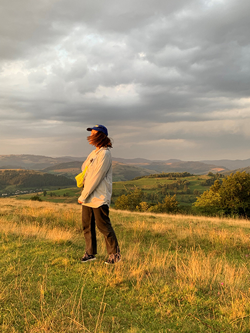

привіт, я соня, я люблю гори і не люблю великі літери.

посилання на мій інстаграм⬆(клац по фотці)
я навчаюсь в львівській академії мистецтв на
кафедрі графічного дизайну.
в майбутньому бачу себе дизайнеркою друкованих видань.
чому мені подобається верстати книжечки:
- я люблю книжки
- можна милуватися буквочками і працювати одночасно
- монотонна робота дуже заспокоює після того, як почитаєш новини
що я роблю в вільний час
- цікавлюсь урбанізмом
- читаю
- займаюся громадською діяльністю
- сплю
- дивлюсь серіальчики
- ходжу в гори